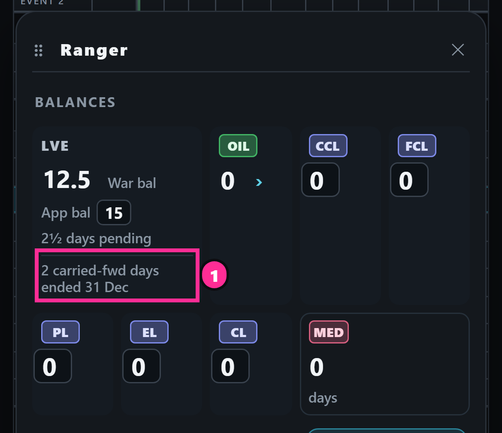

<title>Leave War M5 questions</title>
<meta name="claude:viewport-fit-sides" content="cover">
<style>
/* One dark page in the app's own look: questions first, each with its picture and a worked example. */
:root{
  --bg:#0d1117; --panel:#161b22; --tile:#1c2330; --edge:#2a3342; --fg:#e6edf3; --mute:#8b98a8;
  --cyan:#38bdf8; --amber:#f2b33d; --red:#f0616d; --green:#3fb950; --pink:#ff3d9a;
  --sans: -apple-system, "Segoe UI", system-ui, Roboto, Arial, sans-serif;
  color-scheme:dark;
}
body{background:var(--bg);color:var(--fg);font-family:var(--sans);font-size:15px;line-height:1.5;
  padding-left:max(16px,env(safe-area-inset-left,0px));padding-right:max(16px,env(safe-area-inset-right,0px));padding-block:20px 48px}
main{max-width:980px;margin:0 auto;display:flex;flex-direction:column;gap:28px}
h1{font-size:22px;margin:0;letter-spacing:.01em;text-wrap:balance}
h2{font-size:18px;margin:0 0 4px;text-wrap:balance}
p{margin:0}
.lead{color:var(--mute);max-width:68ch}
.now{background:var(--panel);border:1px solid var(--edge);border-radius:12px;padding:16px;display:flex;flex-direction:column;gap:10px}
.now h2{font-size:13px;text-transform:uppercase;letter-spacing:.08em;color:var(--cyan)}
.now ol{margin:0;padding-left:22px;display:flex;flex-direction:column;gap:6px}
.now a{color:var(--fg)}
.rec{color:var(--green);font-weight:600}
section{display:flex;flex-direction:column;gap:12px;border-top:1px solid var(--edge);padding-top:20px}
.q{color:var(--mute);font-size:13px;text-transform:uppercase;letter-spacing:.08em}
figure{margin:0;display:flex;flex-direction:column;gap:6px;min-width:0}
figure img{display:block;width:100%;height:auto;border-radius:8px;border:1px solid var(--edge);cursor:zoom-in}
figcaption{color:var(--mute);font-size:13px}
.crop{overflow:hidden;border-radius:8px;border:1px solid var(--edge)}
.crop img{border:0;border-radius:0}
.row{display:grid;grid-template-columns:repeat(auto-fit,minmax(240px,1fr));gap:12px}
.tile{background:var(--tile);border:1px solid var(--edge);border-radius:10px;padding:12px;display:flex;flex-direction:column;gap:8px;min-width:0}
.tile.bad{border-color:var(--red)}
.tile.good{border-color:var(--green)}
.tile h3{margin:0;font-size:14px}
.figs{display:grid;grid-template-columns:repeat(3,1fr);gap:6px;font-variant-numeric:tabular-nums}
.figs span{display:block;color:var(--mute);font-size:12px}
.figs b{font-size:20px}
.amber{color:var(--amber)} .redt{color:var(--red)} .greent{color:var(--green)}
.note{font-size:13px;color:var(--mute)}
table{border-collapse:collapse;font-variant-numeric:tabular-nums;width:100%}
th,td{text-align:left;padding:6px 10px;border-bottom:1px solid var(--edge);font-size:14px}
th{color:var(--mute);font-weight:600;font-size:12px;text-transform:uppercase;letter-spacing:.06em}
.tw{overflow-x:auto}
.days{display:grid;grid-template-columns:repeat(5,minmax(0,1fr));gap:6px}
.day{background:var(--tile);border:1px solid var(--edge);border-radius:8px;padding:8px;text-align:center;font-size:13px}
.day b{display:block;font-size:15px}
.day.y1{border-color:var(--amber)} .day.y2{border-color:var(--cyan)} .day.none{opacity:.55}
.split{display:grid;grid-template-columns:repeat(auto-fit,minmax(280px,1fr));gap:16px}
.part{background:var(--panel);border:1px solid var(--edge);border-radius:12px;padding:14px;display:flex;flex-direction:column;gap:10px;min-width:0}
.warn{color:var(--fg);font-size:14px}
.warn b{color:var(--amber)}
dialog{background:#000;border:0;padding:0;max-width:96vw;max-height:96vh}
dialog img{max-width:96vw;max-height:96vh;display:block}
dialog::backdrop{background:rgba(0,0,0,.85)}
:focus-visible{outline:2px solid var(--cyan);outline-offset:2px}
</style>

<main>
  <header style="display:flex;flex-direction:column;gap:6px">
    <h1>Leave War M5: four points before the drawings</h1>
    <p class="lead">Each point has its picture and a worked example. Tap a picture to see it full size.</p>
  </header>

  <div class="now">
    <h2>Look at now (newest first)</h2>
    <ol>
      <li><a href="#q5">Names as the schedule's puck, "O" and "G"</a> (your changes of 15:43 and 15:57): <span class="rec">recommended</span> build as drawn, on its own, before M5.</li>
      <li><a href="#q1">War bal after a bid is approved</a>: <span class="rec">recommended</span> it keeps coming off until he types a new App bal.</li>
      <li><a href="#q2">A leave across 31 Dec</a>: <span class="rec">recommended</span> each day counts in its own year.</li>
      <li><a href="#q3">The 1 Jan roll-over, three cases</a>: <span class="rec">recommended</span> as shown.</li>
      <li><a href="#q4">M5 in two merges</a>: <span class="rec">recommended</span> balances first, then the admin's set-up.</li>
    </ol>
    <p class="warn"><b>Older drawings.</b> The drawings below are from 22 Oct 26. Some still show "½" and "waiting", which your later rulings changed (".5", "pending"). All of them will be redrawn and shown to you before anything is built.</p>
  </div>

  <section id="q5">
    <span class="q">Newest · your changes of 28 Oct, 15:43 and 15:57</span>
    <h2>Leave War names as the schedule's puck; OCU "O", ground personnel "G"</h2>
    <p>Redrawn with the schedule's own puck, the same one Approvals uses, as you picked. OCU reads "O" in the schedule's purple, and ground personnel get a "G" chip; the schedule's own puck has no chip for them, so the "G" is new. Tapping the chip still lists his qualifications, and tapping the name still opens his window.</p>
    <p><b>On a phone:</b> every chip shows whole, and names cut short drop from 20 today to 3 that fade at the end ("Sidewinder", "Talisman", "Wildcard"), as long names do on the schedule. The puck shrinks to fit the phone's name column, which is a few pixels narrower than the schedule's puck. <b>On a desktop</b> it keeps the schedule's size.</p>
    <p><b>One change to see:</b> the puck brings the schedule's lighter olive and green. The Leave War's name bars were made darker on 4 Sep 26 at your word ("make the colour darker"); this drawing goes back to the schedule's colours. Say if you want the darker ones kept.</p>
    <div class="row">
      <figure><figcaption>1. Phone, today: "Led…", "Re…", "Co…" beside separate chips.</figcaption></figure>
      <figure><figcaption>2. Phone, drawn: the schedule's puck, "O" and "G".</figcaption></figure>
    </div>
    <div class="row">
      <figure><figcaption>3. Desktop, today. Ringed: an OCU man and ground personnel.</figcaption></figure>
      <figure><figcaption>4. Desktop, drawn: the schedule's puck at its own size.</figcaption></figure>
    </div>
    <p><span class="rec">Recommended:</span> build it as drawn, as a small change on its own before M5. It touches only how the name column looks, and M5's Balances page can then show names the same way.</p>
  </section>

  <section id="q1">
    <span class="q">Point 1</span>
    <h2>War bal after a bid is approved</h2>
    <p>The LVE tile you approved: App bal is what he types from the official leave app; Pending is his bids not yet decided; War bal is App bal less the pending days.</p>
    <figure>
      <div class="crop" style="aspect-ratio:1170/560"></div>
      <figcaption>Your approved tile (round 18). Pink hairlines are drawing marks only.</figcaption>
    </figure>
    <p><b>The gap:</b> once a bid is approved it is no longer pending. As ruled, its days then come back into War bal until he types a new App bal.</p>
    <div class="row">
      <div class="tile">
        <h3>1. Ranger bids 2.5 days</h3>
        <div class="figs"><div><span>App bal</span><b>17</b></div><div><span>Pending</span><b class="amber">−2.5</b></div><div><span>War bal</span><b>14.5</b></div></div>
      </div>
      <div class="tile bad">
        <h3>2a. Approved: as ruled now</h3>
        <div class="figs"><div><span>App bal</span><b>17</b></div><div><span>Pending</span><b>–</b></div><div><span>War bal</span><b class="redt">17</b></div></div>
        <p class="note">The 2.5 days come back, so he looks as if he can bid them again.</p>
      </div>
      <div class="tile good">
        <h3>2b. Approved: recommended</h3>
        <div class="figs"><div><span>App bal</span><b>17</b></div><div><span>Approved</span><b>−2.5</b></div><div><span>War bal</span><b class="greent">14.5</b></div></div>
        <p class="note">Approved leave keeps coming off until he types a new App bal from the official app; then the count starts afresh. The app remembers the date he typed it.</p>
      </div>
    </div>
    <p class="note">Sketch of the figures only, not the app. The exact words on the tile are drawn in the next round.</p>
  </section>

  <section id="q2">
    <span class="q">Point 2</span>
    <h2>A leave across 31 Dec</h2>
    <p>Example: Ranger takes leave Thu 31 Dec 2026 to Mon 4 Jan 2027. Which year's leave does it use?</p>
    <div class="tw"><div class="days" style="min-width:420px">
      <div class="day y1"><b>Thu 31 Dec</b>2026 · 1 day</div>
      <div class="day none"><b>Fri 1 Jan</b>holiday · 0</div>
      <div class="day none"><b>Sat 2 Jan</b>weekend · 0</div>
      <div class="day none"><b>Sun 3 Jan</b>weekend · 0</div>
      <div class="day y2"><b>Mon 4 Jan</b>2027 · 1 day</div>
    </div></div>
    <p><span class="rec">Recommended:</span> each day counts in the year it falls in: 1 day from 2026, 1 day from 2027. Holidays and weekends cost nothing, as the war counts them today. The other way is to charge the whole leave to the year it starts in.</p>
  </section>

  <section id="q3">
    <span class="q">Point 3</span>
    <h2>The 1 Jan roll-over: three cases to confirm</h2>
    <p>Your own example (D1235): 37 left, 4 of them carried forward, a junior pilot (+33 on 1 Jan) becomes <b>33 carried forward, 66 in all</b>. The unused 4 are gone. Three cases it does not cover:</p>
    <div class="tw"><table>
      <thead><tr><th>Case</th><th>On 31 Dec</th><th>On 1 Jan: recommended</th></tr></thead>
      <tbody>
        <tr><td>No grade set</td><td>37 left, 4 carried fwd</td><td>33 carried fwd, <b>33 in all</b>: nothing added</td></tr>
        <tr><td>Leave pending over the new year</td><td>A bid for 29–30 Dec, not yet decided</td><td>It counts against <b>2026</b>, the year its days fall in</td></tr>
        <tr><td>Below zero</td><td>−2 left (overdrawn)</td><td><b>0</b> carried fwd; the 2 overdrawn days still come off: −2 + 33 = <b>31</b></td></tr>
      </tbody>
    </table></div>
    <div class="row">
      <figure>
        <div class="crop" style="aspect-ratio:1170/560"></div>
        <figcaption>Where carried-forward days show: "incl. 4 carried fwd · till 31 Dec" under App bal.</figcaption>
      </figure>
      <figure>
        
        <figcaption>Older drawing (round 10), mark 1: how unused carried-forward days going on 1 Jan could be told. To be redrawn.</figcaption>
      </figure>
    </div>
    <p class="note">The below-zero case is how I read "a balance below zero carries nothing forward": the overdrawn days are not forgiven. Say if you mean otherwise.</p>
  </section>

  <section id="q4">
    <span class="q">Point 4</span>
    <h2>M5 in two merges</h2>
    <p>M5 has seven jobs, about two and a half to three times M4, and nearly all touch saved leave figures or who may change them. One check over all seven would be very long. <span class="rec">Recommended:</span> two merges, each with its own full check and your "merge live". This changes your approved plan from five merges to six.</p>
    <div class="split">
      <div class="part">
        <h3 style="margin:0">M5a: balances (first)</h3>
        <p class="note">The person window with a member's new lines, the Balances page with "Lock for members", a member typing his own figures, grades and the 1 Jan roll-over.</p>
        <figure><figcaption>The person window (older drawing, round 7): the window at the right, marks 1–4.</figcaption></figure>
        <figure><figcaption>The Balances page (older drawing, round 14): Ranger's row marked. It still shows "No grade 2" and "½", both since ruled out.</figcaption></figure>
      </div>
      <div class="part">
        <h3 style="margin:0">M5b: the admin's set-up (second)</h3>
        <p class="note">The new Settings with "+ SANS", Management first, and holidays and events brought in by file.</p>
        <figure><figcaption>The new Settings (older drawing, round 7). "Lock balances" here has since moved to the Balances page.</figcaption></figure>
        <figure><figcaption>The Events list (older drawing, round 7).</figcaption></figure>
      </div>
    </div>
  </section>
</main>

<dialog id="zoom" aria-label="Full-size picture"></dialog>
<script>
// Tap a picture to see it full size; tap again or press Escape to close.
const d=document.getElementById('zoom'), zi=document.createElement('img');
d.appendChild(zi);
document.querySelectorAll('main img').forEach(im=>{
  im.tabIndex=0;
  const open=()=>{zi.src=im.src;zi.alt=im.alt;try{d.showModal()}catch(e){}};
  im.addEventListener('click',open);
  im.addEventListener('keydown',e=>{if(e.key==='Enter')open()});
});
d.addEventListener('click',()=>d.close());
</script>
